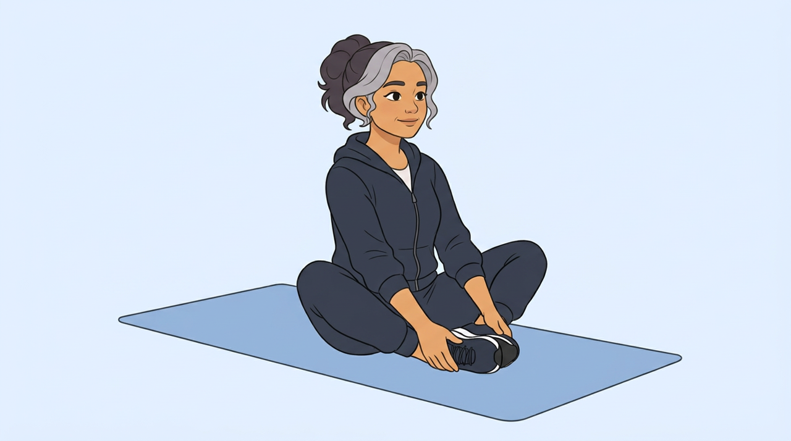
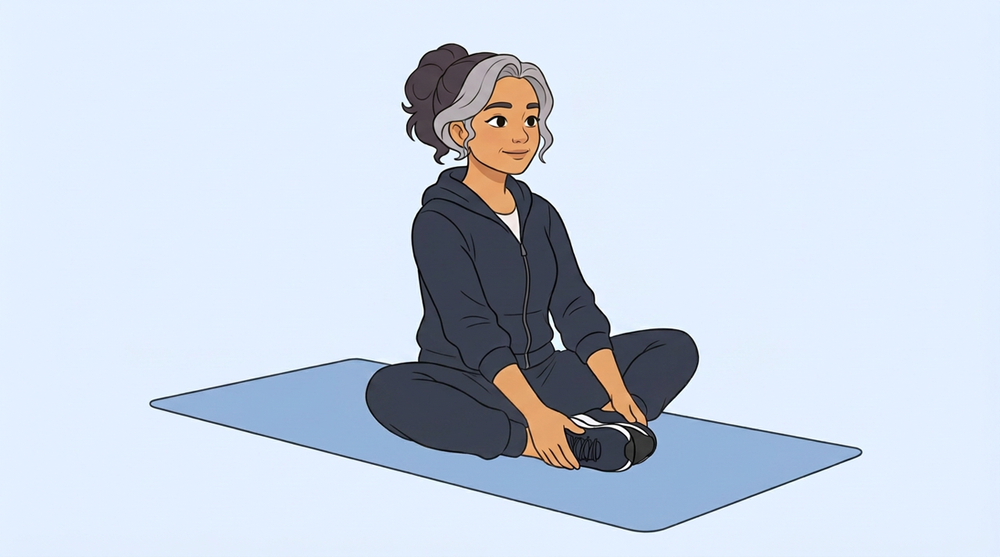

03 · Butterfly flaps
Plan for review: Relatio's clip beside COGITO AI's two pictures. The COGITO AI video is not made yet. Nothing has been sent to Veo.
Relatio
Butterfly flaps (Relatio clip)
Front-on. One rep = 1.92 s.
COGITO AI, start picture
Knees up

COGITO AI, peak pictureKnees lowered

| Relatio | COGITO AI (planned) | |
|---|---|---|
| Movement | Butterfly flaps | Butterfly flaps |
| Shown by | Anatomy figure | Coach woman |
| Camera | Front-on | Raised three-quarter from her front-left |
| One rep | 1.92 s | 1.92 s |
| What plays | Loops under a countdown | 3 reps (about 6 s), then stops |
| Sides | Both knees move together, so nothing is mirrored | |
Exact prompts and settings
Start picture
Flat 2D cartoon illustration in exactly the style, line weight and colours of the reference image. Soft blue exercise mat on a plain pale blue background. No new colours, no text, no numbers, no logos, no other people, no props except what the movement needs. The person is the same athletic woman with the face, hair, skin tone and outfit of the reference image — keep every clothing colour and every hair detail exactly. Seen from a raised three-quarter angle, the camera a little above her and to her front-left, so she face a little toward the LEFT of the frame, her right side is on the LEFT of the frame, and both arms and both legs are clearly visible and separate: she sit upright in the middle of the mat, the soles of both feet pressed together in front of the pelvis, heels close to the body, knees bent out to the sides and lifted clearly above the mat, each knee about a hand's length off it. She keeps the same dark trainers with white soles on both feet as in the reference image; no bare feet. Both hands are open and empty and hold the feet loosely, elbows resting lightly on the inner thighs. Back tall, shoulders relaxed, eyes forward. Eyes open, face relaxed. The dark zip hoodie is zipped fully closed down to the joggers, with no bare skin at the waist. The hoodie is plain, with no muscle lines drawn on it. Nothing is held in her hands, and no arm hides the movement. The whole figure and the mat are visible with margin, centred in a 16:9 frame. Keep the face, hair, outfit and colours exactly as in the reference image.
Peak picture
Edit this image. Change only the person's pose: both knees have lowered evenly out to the sides toward the mat, now only a finger's width above it, clearly lower than in the image, like wings opening; the soles of the feet still press together and the hands still hold the feet; back stays tall and the seat does not move. The same dark trainers stay on both feet. The hoodie stays plain and closed, with no muscle lines and no bare skin at the waist. Every joint bends the way a real body can. The background, the mat, every object on it, the framing, and the person's face, hair and clothes stay exactly where and as they are.
Video prompt
Flat 2D cartoon illustration in exactly the style, line weight and colours of the reference image. Soft blue exercise mat on a plain pale blue background. No new colours, no text, no numbers, no logos, no other people, no props except what the movement needs. The person is the same athletic woman with the face, hair, skin tone and outfit of the reference image — keep every clothing colour and every hair detail exactly. Locked-off tripod shot, no zoom, no pan, no camera movement; the person stays the same size and position in the frame. Over four seconds, she gently lower both knees toward the mat, like wings opening. The eyes stay open and the face stays still. Every joint moves the way a real body can. The hands stay on the feet and the soles stay together. This is a very small, slow movement: the first and last frames are almost the same, and the body never moves further than the last frame at any moment; no squat, no bridge, no kick, no large movement, moving smoothly and steadily from the pose in the first frame to the pose in the last frame, arriving exactly at the last frame. Nothing else happens: no turning around, no walking away, no objects appear or are picked up, no extra movements. Keep the face, hair, outfit, the mat and the background exactly as in the image. Locked-off tripod shot, no zoom, no pan, no camera movement; the person stays the same size and position in the frame.
Negative prompt
text, numbers, logos, extra people, second figure, extra limbs, merged limbs, muscles, anatomy, highlighted body parts, red highlights, realistic skin texture, photographic style, camera movement, zoom, cuts, colour change, background change
Settings
veo-3.1-fast-generate-001 16:9, 4 seconds, 2 versions, no audio First frame: start picture. Last frame: peak picture.